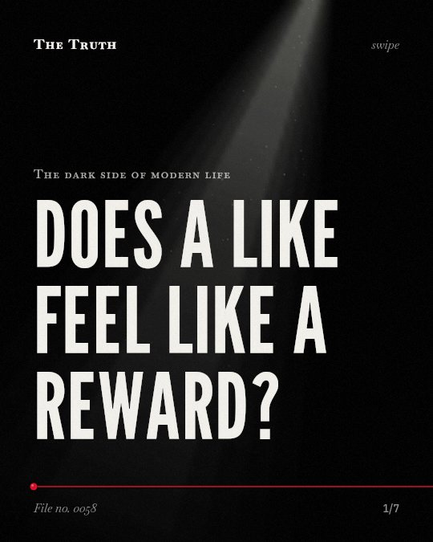

The dark side of modern life
Does a like feel like a reward?

Likes activate the same brain circuitry as physical rewards.
Providing likes to others triggers activity in the striatum and ventral tegmental area. This same circuitry processes reward.
Established. Several studies combined, or official data. The evidence backs this.
What the research found
When viewing risky photos, activation in the cognitive-control network decreases in adolescents.
“Furthermore, when adolescents viewed risky photos (as opposed to neutral photos), activation in the cognitive-control network decreased.”
Study, 2016. Sherman et al., Psychological science.
Providing Likes to others on social media is linked to activation in brain circuitry implicated in reward, including the striatum and ventral tegmental area.
“The experience of providing Likes to others on social media related to activation in brain circuity implicated in reward, including the striatum and ventral tegmental area”
Study, 2018. Sherman et al., Social Cognitive and Affective Neuroscience.
High school students showed decreased activation of neural regions implicated in cognitive control when viewing images depicting risk-taking compared to nonrisky photographs.
“When viewing images depicting risk-taking (vs. nonrisky photographs), high school students, but not college students, showed decreased activation of neural regions implicated in cognitive control.”
Study, 2017. Sherman et al., Child Development.
Adolescents are more likely to like photos that already have many likes compared to photos with few likes.
“They were more likely to like photos depicted with many likes than photos with few likes; this finding showed the influence of virtual peer endorsement”
Study, 2016. Sherman et al., Psychological science.
Viewing photos with many likes is linked to greater activity in brain regions involved in reward processing, social cognition, imitation, and attention.
“Viewing photos with many (compared with few) likes was associated with greater activity in neural regions implicated in reward processing, social cognition, imitation, and attention.”
Study, 2016. Sherman et al., Psychological science.
Positive feedback like 'likes' activates the nucleus accumbens (NACC), which is linked to increased social media use intensity.
“Positive feedback ("likes") activates areas like the nucleus accumbens (NACC), vmPFC, and amygdala, with NACC correlating with increased SM use intensity.”
Systematic review, 2025. Dores et al., Healthcare.
Popularity drives attention and reward.
Viewing photos with many likes increases activity in brain regions involved in reward processing, social cognition, imitation, and attention.
Your attention is being steered by social feedback.
That may be why you find yourself drawn to popular content. The brain reacts to these social signals as a primary reward.
This part is our reading of the evidence, not a finding.
The thumb flick.
You sit in a dark room at 11 p.m. You scroll past a photo. You tap the heart icon without thinking about it.
The honest summary
The evidence shows that 'likes' and popular content trigger reward-related brain activity and influence behavior, particularly in adolescents.
The research highlights disparities regarding the roles of sex, personality traits, and whether the person giving the feedback changes the neural response.
Who is controlling your attention?
Sources
- Sherman LE, Payton AA, Hernandez LM, Greenfield PM, Dapretto M (2016). The Power of the Like in Adolescence: Effects of Peer Influence on Neural and Behavioral Responses to Social Media. Psychological science. Study, cited 621 times.
- Lauren E. Sherman, Leanna M. Hernandez, Patricia M. Greenfield et al. (2018). What the brain ‘Likes’: neural correlates of providing feedback on social media. Social Cognitive and Affective Neuroscience. Study, cited 206 times.
- Dores AR, Peixoto M, Fernandes C, Marques A, Barbosa F (2025). The Effects of Social Feedback Through the “Like” Feature on Brain Activity: A Systematic Review. Healthcare. Systematic review, cited 16 times.
- Lauren E. Sherman, Patricia M. Greenfield, Leanna M. Hernandez et al. (2017). Peer Influence Via Instagram: Effects on Brain and Behavior in Adolescence and Young Adulthood. Child Development. Study, cited 195 times.
Also read for this file, not quoted
This file was researched and drafted by software, then checked by rules a model cannot talk its way around: each quote above was matched word for word against the paper, and every number had to appear in it. How files are made.